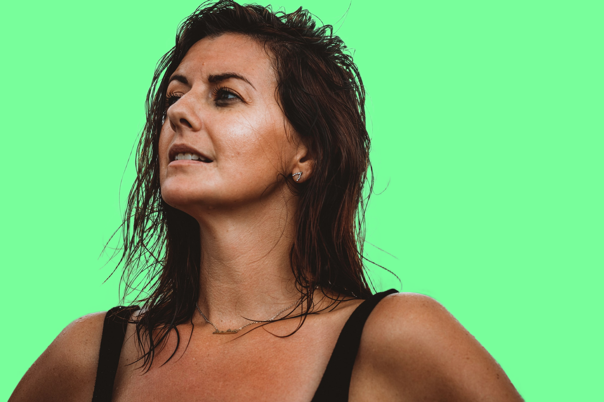

视频样例
Abstract
High-resolution video matting requires fine-detail recovery and temporal consistency, yet faces high computational costs and limited supervision. We propose SnapMat (Sparse Native-resolution Alpha Prediction), a sparse refinement framework that separates target propagation from detail recovery. Given a first-frame target mask, we adapt SAM2 with continuous alpha supervision for temporal propagation and coarse alpha prediction on the backbone grid. DICE (Dense Image-Context Encoding) extracts low-resolution target and temporal context, which SHARP (Sparse High-resolution Alpha Residual Prediction) fuses with native-resolution RGB to predict alpha residuals in selected regions through two-dimensional sparse computation. Real-scene references guide coherent foreground–background generation, while generated RGBA layers provide foreground color and alpha. Compositing, review, and targeted correction yield REALM (REference-guided Alpha Layer Matting), with 10,054 image samples and 1,007 four-frame clips. SnapMat achieves leading results across multiple evaluation settings on YouTubeMatte, VideoMatte240K, and HHM2K, with 4K inference at 21.76 frames per second (FPS) and 2.11 GB of peak allocated GPU memory on an NVIDIA RTX 5090. Ablations and equal-source-frame comparisons validate the refinement design and the training value of generated images and four-frame clips.
Method
Speed Comparison
Video could not be loaded. Press play to retry.
VIDEO
IMAGE

Refinement gate
Pick a point to compare the same detail before and after refinement.
BibTeX